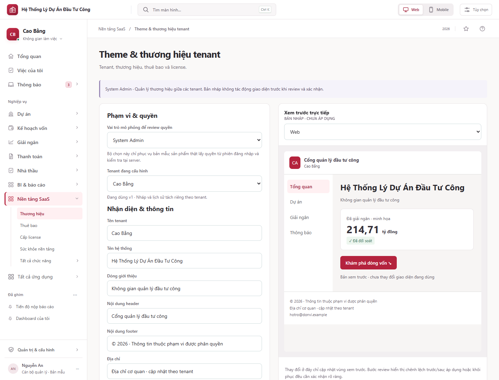
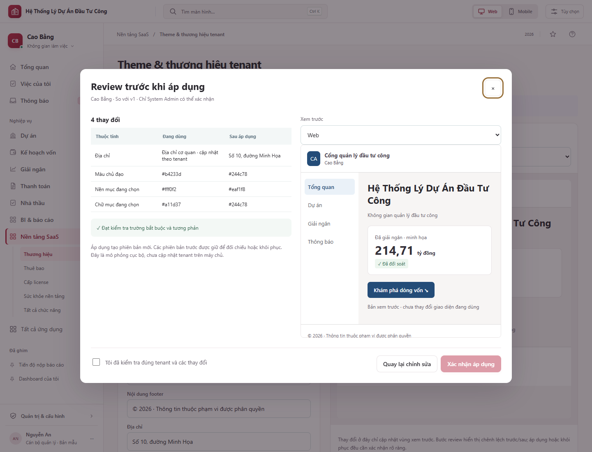

Đặc tả bổ sung · 22/10/2026 · System Admin độc quyền cấu hình.
| Thao tác | System Admin | Tenant Admin |
|---|---|---|
| Đọc cấu hình đã công bố | Các tenant trong phạm vi hệ thống | Chỉ tenant trong phiên đăng nhập |
| Chọn tenant; đọc nháp và lịch sử quản trị | Cho phép | Từ chối |
| Sửa, lưu nháp, upload/xóa logo | Cho phép | Từ chối |
| Tạo review, công bố, khôi phục | Cho phép | Từ chối |
Trong prototype lịch sử mẫu có thể xem để đánh giá luồng; sản phẩm thật tách API lịch sử quản trị khỏi API đọc theme đã công bố. Không cấp quyền này thông qua nhóm quyền tùy biến của Tenant Admin.
Published → Draft → Validated review → Confirm → Published version mới. Hủy review giữ nguyên bản đang dùng. Bỏ thay đổi nạp lại bản đã công bố. Khôi phục chọn phiên bản lịch sử → review với bản hiện hành → xác nhận → phiên bản mới; không sửa/xóa lịch sử.
Review chỉ có hiệu lực cho đúng actor, tenant, base version và hash cấu hình, hết hạn sau 15 phút. Nếu draft hoặc bản hiện hành thay đổi, buộc review lại. Công bố dùng khóa phiên bản và idempotency key; kiểm quyền lại trong transaction. Nếu ghi hoặc phát hành thất bại, giữ bản hiện hành và cho retry có kiểm soát.
| Thực thể | Trường chính / ràng buộc |
|---|---|
| tenant_theme_draft | tenant_id, revision, config_json, updated_by, updated_at; duy nhất theo tenant |
| tenant_theme_version | tenant_id, version, config_hash, config_json, source_version, actor_id, published_at, reason; bất biến |
| tenant_theme_pointer | tenant_id, current_version; FK cùng tenant, cập nhật nguyên tử |
| tenant_theme_review | token_hash, tenant_id, actor_id, base_version, draft_revision, config_hash, expires_at, consumed_at |
| tenant_theme_asset | tenant_id, asset_id, content_hash, MIME, dimensions, scan_status, storage_key; không dùng URL tùy ý |
| audit_event | actor, tenant, action, before_version, after_version, request_id, timestamp, outcome |
GET /me/tenant/theme chỉ trả bản published theo tenant từ phiên đăng nhập. Các endpoint /system/tenants/{tenantId}/theme/* chỉ dành cho System Admin: GET versions; GET/PUT draft; POST assets; POST reviews (draft hoặc sourceVersion); POST publish với reviewToken, baseVersion, idempotencyKey. Không có endpoint ghi trực tiếp bỏ qua review. Trả 401/403/409/422 theo tình huống, 413 nếu tệp vượt giới hạn; không tiết lộ sự tồn tại tenant qua lỗi truy cập.
Logo PNG/JPEG/WebP tối đa 1 MB; kiểm magic bytes, giải mã ảnh, giới hạn kích thước/pixel, quét tệp, loại metadata và tái mã hóa phía server. Chặn SVG và URL tải ngoài. Tài sản được lưu theo tenant và content hash; phiên bản giữ tham chiếu, không nhân bản blob. Chỉ dọn tài sản không còn được tham chiếu theo chính sách lưu trữ. Văn bản escape khi render; màu chỉ chấp nhận token HEX hợp lệ. Sáu cặp màu văn bản/nền đạt ít nhất 4,5:1; tiếp tục audit focus, hover, disabled và biểu đồ khi triển khai.
Cache key gồm tenant_id + version; sự kiện ThemePublished qua outbox cập nhật CDN/web/app. Phiên đang mở nhận thông báo đổi theme và tải lại token, không tải lại toàn bộ trang hoặc mất form. Mobile offline dùng bản hợp lệ gần nhất của đúng tenant; xóa cache khi logout/chuyển tenant. Lỗi tải theme dùng bộ token mặc định tương phản tốt, không lấy theme tenant khác. Lịch sử phân trang; retention theo chính sách, không tự xóa bản đang dùng hoặc audit.
Luồng tương tác chạy cục bộ bằng localStorage, bộ chọn vai trò chỉ là mô phỏng. Chưa triển khai backend, RBAC server, asset service, audit bền vững hoặc invalidation phân tán.


Test catalogue · Backlog · Quyết định còn mở · Hợp đồng18 module
Nội dung nghiên cứu/kiểm tra prototype được giữ làm bằng chứng lịch sử; không thay kết quả test trên backend.